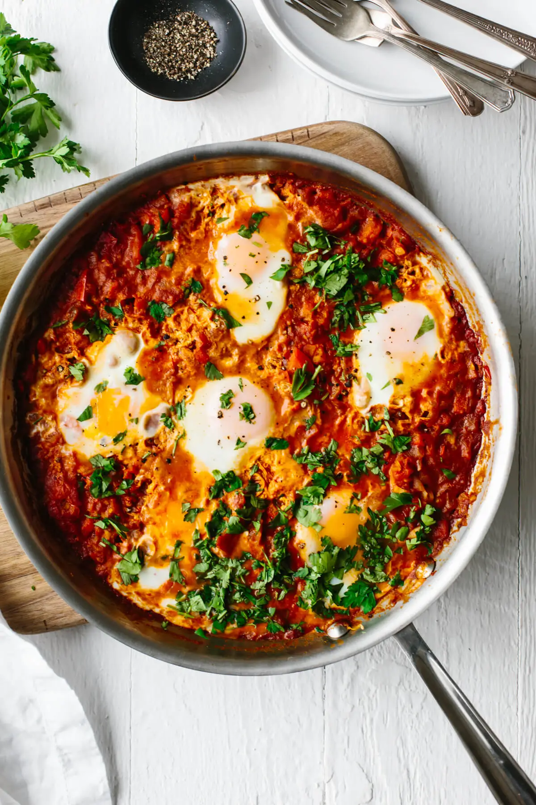
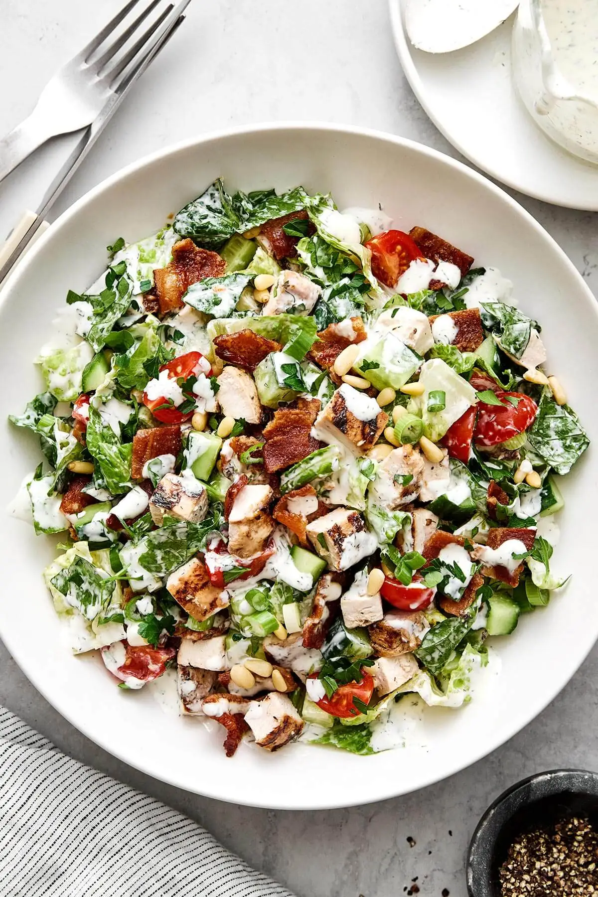
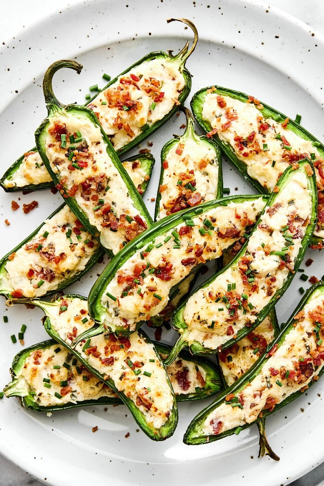
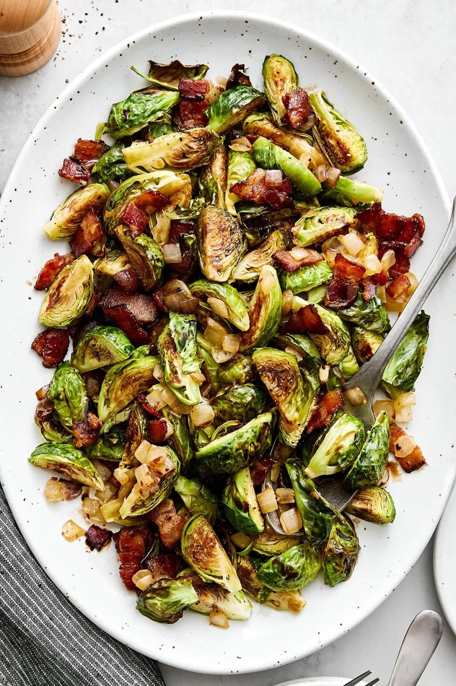
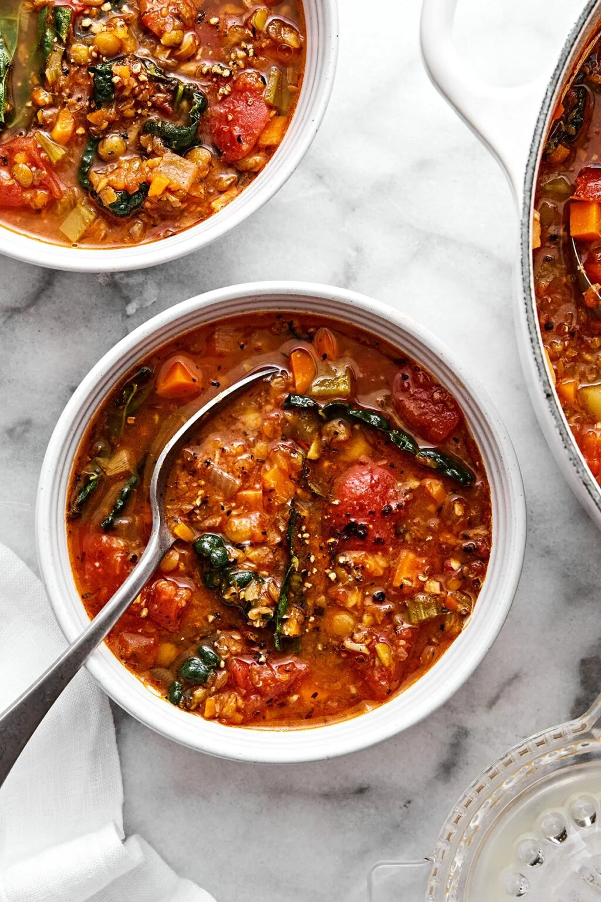
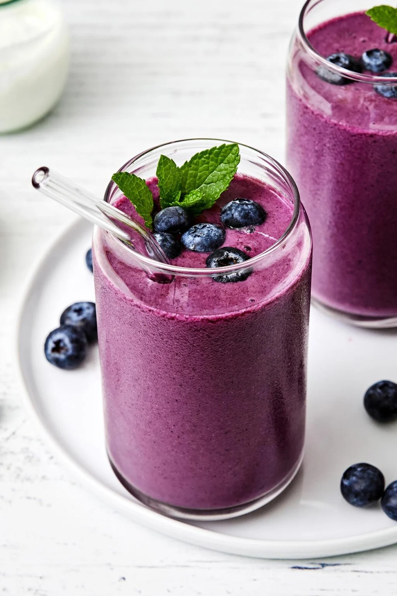

Module 01: Introduction to HTML
Created by: Ashton Gibson
Shakshuka

https://downshiftology.com/recipes/shakshuka/ (Opens in new tab)
Shakshuka! A northern African breakfast for 4 for well under $5!
More Recipes:

https://downshiftology.com/recipes/chicken-bacon-ranch-chopped-salad/ (Opens in new tab)

https://downshiftology.com/recipes/jalapeno-poppers/ (Opens in new tab)

https://downshiftology.com/recipes/balsamic-bacon-brussels-sprouts/ (Opens in new tab)

https://downshiftology.com/recipes/very-best-lentil-soup/ (Opens in new tab)

https://downshiftology.com/recipes/blueberry-smoothie/ (Opens in new tab)